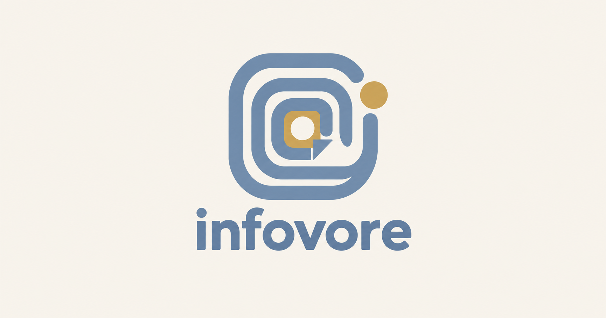

<!doctype html><html lang="zh-Hant"><meta charset="utf-8"><meta name="viewport" content="width=device-width,initial-scale=1"><title>infovore · 霧藍暖金</title><style>body{margin:0;background:#f4f1eb;color:#303b4c;font:17px/1.7 system-ui,sans-serif}main{max-width:1000px;margin:auto;padding:32px 24px}section{display:grid;grid-template-columns:repeat(auto-fit,minmax(240px,1fr));gap:20px}article{padding:24px;border:1px solid #929ba540;border-radius:18px;text-align:center}article img{width:100%;max-width:250px;background:transparent}article strong{display:block;font-size:28px;letter-spacing:-1px}.light{background:#fff;color:#4e617c}.dark{background:#111317;color:#d1dbe8}.ivory{background:#f4f1eb;color:#4e617c}.charcoal{background:#20242b;color:#d1dbe8}a{color:#4e617c}li{margin:12px 0}.cover{width:100%;border-radius:18px;margin:20px 0}small{color:#697583}article small{color:inherit}</style><main><h1>生活年輪 · 霧藍與暖金</h1><p>保留造型，降低飽和度，移除圖示白底。霧藍 #7086A5 ／ 暖金 #BE9B65。</p><section><article class="light"><strong>infovore</strong><small>白底</small></article><article class="dark"><strong>infovore</strong><small>黑底</small></article><article class="ivory"><strong>infovore</strong><small>暖白底</small></article><article class="charcoal"><strong>infovore</strong><small>炭灰底</small></article></section></main></html>